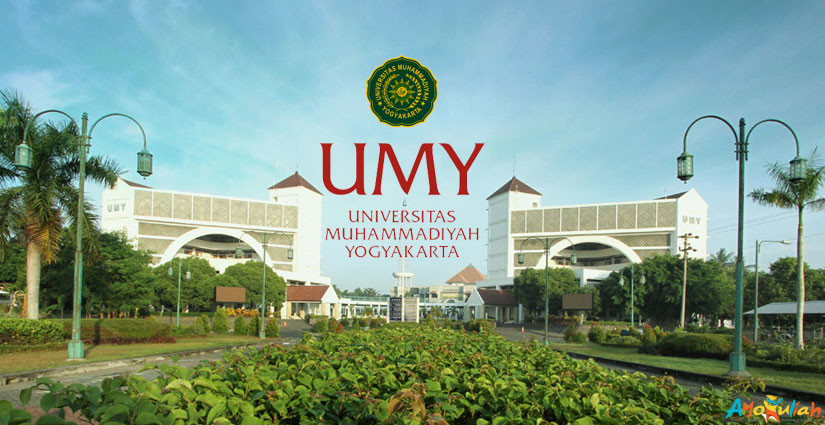

Profile
Universitas Muhammadiyah Yogyakarta merupakan institusi perkuliahan yang Unggul dan Islami dan telah dilengkapi dengan sistem perkuliahan yang berkemajuan dan bertaraf internasional untuk menunjang masa depan Anda, serta kehidupan kampus yang telah dirancang seimbang guna menghasilkan lulusan yang unggul dalam teknologi namun tetap berlandaskan nilai-nilai keislaman.
Mars UMY
Didalam penulisan proses pembuatan lagu mars UMY, penulis memberikan suatu gambaran tentang peranan musik bagi suatu lembaga dalam mewujudkan ide melalui kerjasama. Adapun kerjasama yang dimaksudkan adalah pembuatan suatu karya musik yang diperuntukan bagi lembaga, yang menginginkan.
Sang Surya
Lagu mars Muhammadiyah yang berjudul "Sang Surya" diciptakan Djarnawi Hadikoesoemo: Ketua Umum pertama Partai Muslimin Indonesia (Parmusi). Lagu yang memiliki lirik 19 baris tersebut, dibuat pada kurun 1976 silam.